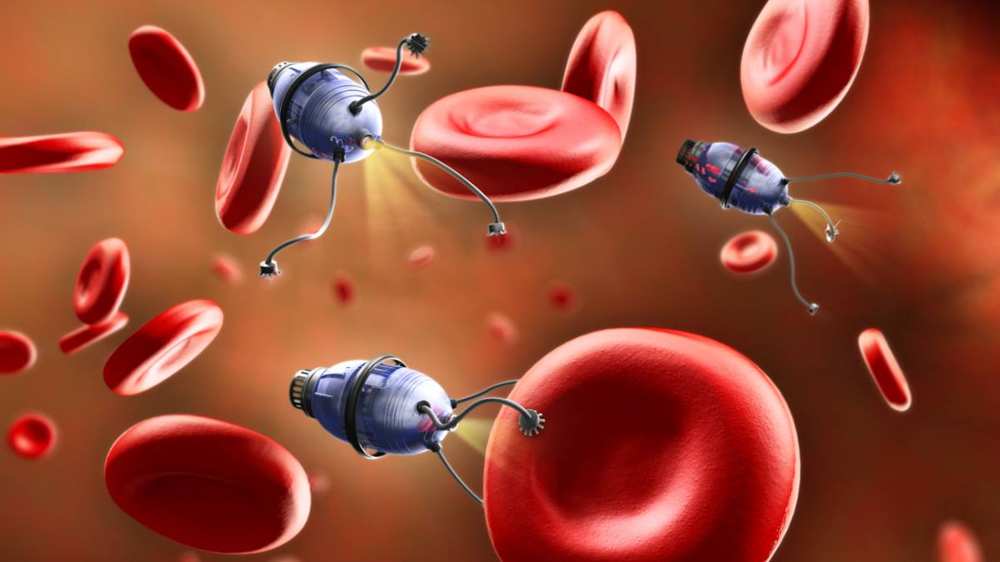

Los nanorobots son sistemas diseñados para desempeñar tareas específicas en dimensiones de escala nanométrica (milmillonésima parte de un metro). Esta gran innovación tecnológica del catalán Samuel Sanchez (1980-) fue pensada como una cura al cáncer. Gracias a esta innovación tecnológica, Samuel Sanchez fue elegido en 2014 como el Mejor innovador del año menor de 35 años en la famosa revista de MIT (Massachusetts institute of technology). La nanotecnología ha avanzado lo suficiente para que hoy, además de administrar fármacos, nanorobots de ADN puedan identificar tumores dentro del cuerpo y descargar la dosis de trombina para que no puedan seguir alimentándose y mueran. Estos nanorobots se mueven por sí mismos, reaccionan a estímulos y son 5.000 veces más pequeños que la punta de una aguja. Ciertamente, una innovación tecnológica sorprendente después del invento de la vacuna en 1796.
2. Ciudades inteligentes. Los drones y los autos autónomos reconfiguraron la forma en que se vive y mira la ciudad. La perspectiva y la forma de movilidad tomaron una nueva perspectiva. A eso hay que sumarle los sensores de automatización que se multiplican. "En la Ciudad de Buenos Aires, por ejemplo, se están colocando sensores en cloacas y desagües para medir qué cantidad de agua hay y así anticipar una inundación. Y hay proyectos para censar tachos de basuras y ver cuán lleno están", remarca el especialista. Como todo lo que está relacionado a Internet de las Cosas, el objetivo es optimizar los procesos. En una ciudad inteligente se busca tener registro de cómo funcionan los servicios, las distintas instalaciones y así poder tomar mejores decisiones, reducir costos y prevenir problemas.

3. Los minúsculos laboratorios médicos dentro de un chip que se desarrollarían gracias a la nanotecnología y los avances científicos, podrían detectar una enfermedad a tiempo, así serán mejor controladas y curadas. Incluso, enfermedades como el cáncer o el Parkinson que son difíciles de detectar y se esconden en nuestros cuerpos sin mostrar síntomas. Este chip podría incorporarse a un dispositivo portátil y enviar la información a la nube. Esto combinado con datos de otros dispositivos como: relojes inteligentes, monitores de sueño, entre otros, podría proporcionar un mapa completo de nuestra salud y alertarnos rápidamente a la primera señal.